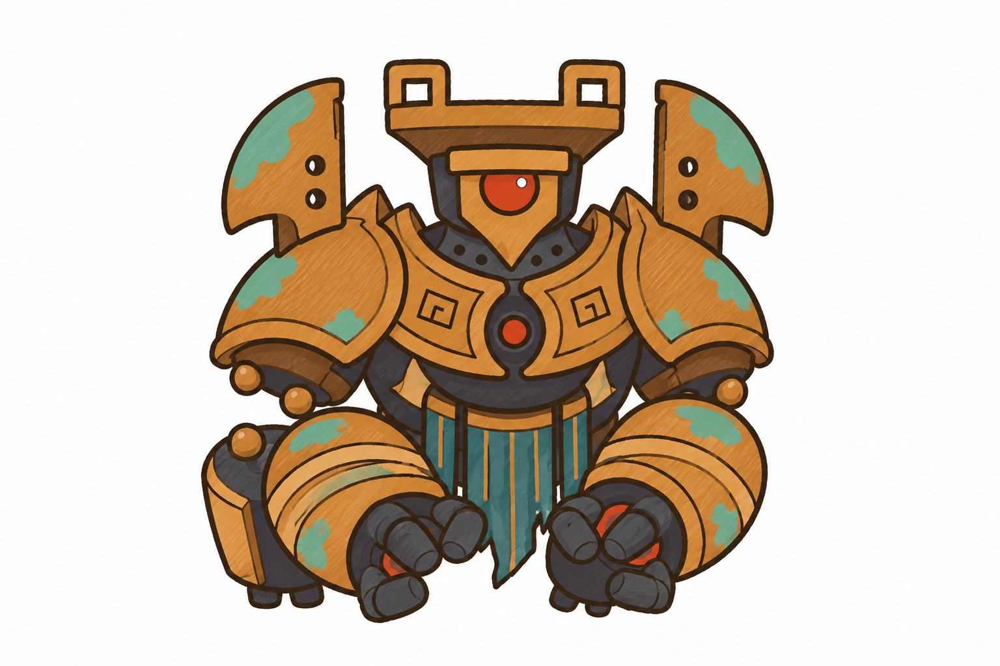
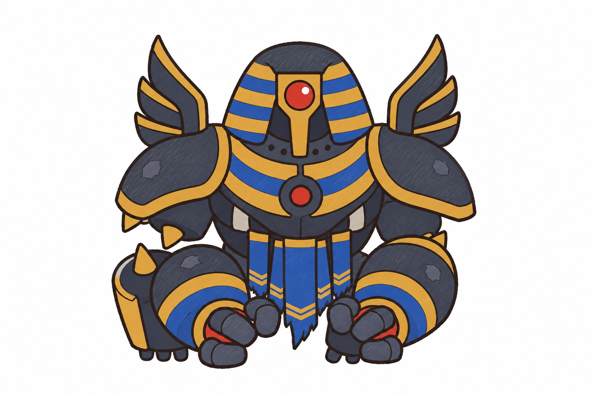
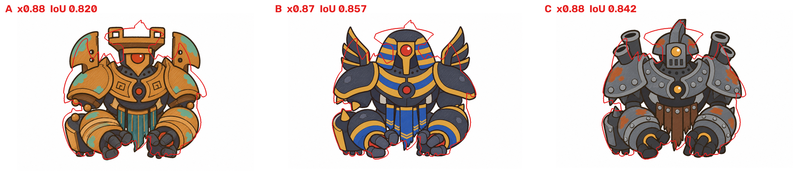

Con gốc monster_3613 (khung 0 idle): chỉ để so dáng, chỗ, cỡ từng mảnh

A đồng thau cổ phủ gỉ xanh: chỏm miệng vạc hai quai vuông, mặt nạ khối vuông (GPT không vẽ đáy nhọn), gai vai lưỡi rìu đồng, giáp ngực hoa văn xoắn vuông, vải xanh mòng két, đinh đồng tròn, mắt đỏ cam

B thép đen + vàng kim + xanh lam kiểu Ai Cập: mũ trùm pharaoh sọc vàng – lam (đầu to hơn con gốc), mặt nạ vàng chòm cằm dài, gai vai cánh chim ưng, giáp ngực vòng cổ sọc, vải lam viền vàng, mắt đỏC sắt cổ gỉ sét, cỗ máy chiến tranh: mũ vòm một vây sống, mặt nạ vuông hàm lưới, mỗi vai hai ống xả, giáp tán đinh to, dải da nâu, mắt vàng hổ phách

Viền đỏ = hình bóng con gốc, concept co về cùng cỡ (GPT vẽ to hơn ~13 %): độ khớp A 0,82 / B 0,86 / C 0,84. Lệch chủ yếu ở chỏm đầu và gai vai (cố ý đổi dáng; đều là mảnh cứng một xương nên không ảnh hưởng clip)